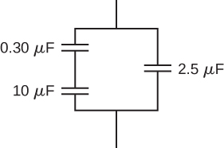
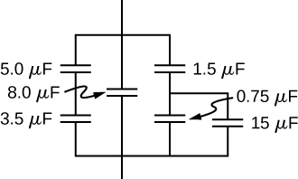
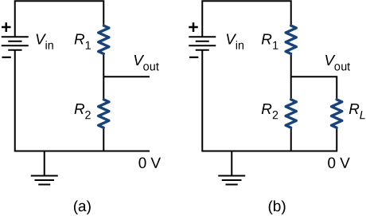
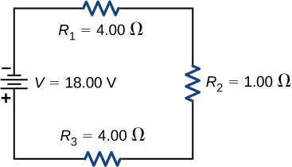
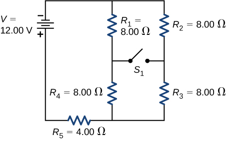
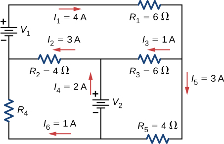
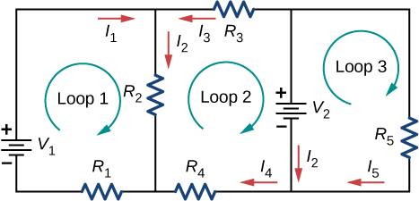
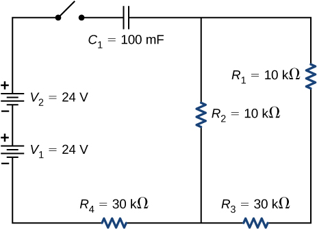

Phy222 Homework 5-7 : DC Circuits
Homework 5: Capacitors
Problem 5.1
Calculate the voltage applied to a 2.00 μF capacitor when it holds 3.10μC of charge.
Problem 5.2
The plates of an empty parallel-plate capacitor of capacitance 5.0 pF are 2.0 mm apart. What is the area of each plate?
Problem 5.3
If the capacitance per unit length of a cylindrical capacitor is 20 pF/m, what is the ratio of the radii of the two cylinders?
Problem 5.4
Find the equivalent capacitance of the combination of series and parallel capacitors shown below.

Problem 5.5
Find the equivalent capacitance of the combination of series and parallel capacitors shown below.

Problem 5.6
A 40-pF capacitor is charged to a potential difference of 500 V. Its terminals are then connected to those of an uncharged 10-pF capacitor. Calculate:
- the original charge on the 40-pF capacitor
- the charge on each capacitor after the connection is made
- the potential difference across the plates of each capacitor after the connection.
Problem 5.7
An air-filled capacitor is made from two flat parallel plates 1.0 mm apart. The inside area of each plate is \(8.0~cm^2\).
- What is the capacitance of this set of plates?
- If the region between the plates is filled with a material whose dielectric constant is 6.0, what is the new capacitance?
Problem 5.8
Earth can be considered as a spherical capacitor with two plates, where the negative plate is the surface of Earth and the positive plate is the bottom of the ionosphere, which is located at an altitude of approximately 70 km. The potential difference between Earth’s surface and the ionosphere is about 350,000 V.
- Calculate the capacitance of this system
- Find the total charge on this capacitor
- Find the energy stored in this system
Homework 6: DC Circuits
Problem 6.1
An aluminum wire \(1.628 \, \text{mm}\) in diameter (14-gauge) carries a current of \(3.00 \, \text{A}\) (look up density and molar masses, and assume each atom contributes one free electron):
- What is the absolute value of the charge density in the wire?
- What is the drift velocity of the electrons?
- What would be the drift velocity if the same gauge copper were used instead of aluminum?
Problem 6.2
Consider a wire of circular cross-section with a radius of \(R = 3.00 \, \text{mm}\). The current density is modeled as \(J = c r^2 = 5.00 \times 10^6 \, \text{A/m}^4 \, r^2\). What is the current through the inner section of the wire from the center to \(r = 0.5R\)?
Problem 6.3
Calculate the effective resistance of a pocket calculator that has a \(1.35 \, \text{V}\) battery and through which \(0.200 \, \text{mA}\) flows.
Problem 6.4
The diameter of $0$-gauge copper wire is \(8.252 \, \text{mm}\). Find the resistance of a \(1.00 \, \text{km}\) length of such wire used for power transmission.
Problem 6.5
A wire is \(25.0 \, \text{m}\) long with a diameter of \(0.100 \, \text{mm}\) and has a resistance of \(77.7 \, \Omega\) at \(20.0^\circ\text{C}\).
- Of what material is the wire made?
- What is its resistance at \(150.0^\circ\text{C}\)?
Problem 6.6
A \(2.2 \, \text{k}\Omega\) resistor is connected across a D cell battery (\(1.5 \, \text{V}\)). What is the current through the resistor?
Problem 6.7
A heater is being designed that uses a coil of 14-gauge nichrome wire to generate \(300 \, \text{W}\) using a voltage of \(V = 110 \, \text{V}\). How long should the engineer make the wire?
Problem 6.8
An alternative to CFL bulbs and incandescent bulbs are light-emitting diode (LED) bulbs. A \(100 \, \text{W}\) incandescent bulb can be replaced by a \(16 \, \text{W}\) LED bulb, both producing \(1600 \, \text{lumens}\) of light. Assuming the cost of electricity is \(0.10 \, \text{per kWh}\), how much does it cost to run the bulb for one year if it runs for four hours a day?
Problem 6.9
Coils are often used in electrical and electronic circuits. Consider a coil formed by winding \(1000\) turns of insulated $20$-gauge copper wire (area \(0.52 \, \text{mm}^2\)) in a single layer on a cylindrical non-conducting core of radius \(2.0 \, \text{mm}\). What is the resistance of the coil? Neglect the thickness of the insulation.
20,27,28,72,35,79,36,39,42,70,54,93
Homework 7: RC Circuits
Problem 7.1
A car battery with a \(12 \, \text{V}\) emf and an internal resistance of \(0.050 \, \Omega\) is being charged with a current of \(60 \, \text{A}\). Note that the battery is being charged.
- What is the potential difference across its terminals?
- At what rate is thermal energy being dissipated in the battery?
- At what rate is electric energy being converted into chemical energy?
Problem 7.2
What are the largest and smallest resistances you can obtain by connecting a \(36.0 \, \Omega\), a \(50.0 \, \Omega\), and a \(700 \, \Omega\) resistor together?
Problem 7.3
An \(1800 \, \text{W}\) toaster, a \(1400 \, \text{W}\) speaker, and a \(75 \, \text{W}\) lamp are plugged into the same outlet in a \(15 \, \text{A}\) fuse and \(120 \, \text{V}\) circuit. (The three devices are in parallel when plugged into the same socket.)
- What current is drawn by each device?
- Will this combination blow the \(15 \, \text{A}\) fuse?
Problem 7.4
The circuit shown is a voltage divider, where the symbol of three horizontal lines represents “ground,” defined as the point where the potential is zero. The voltage divider is commonly used to provide reduced voltage to a load resistor.
- What is the output voltage \(V_{\text{out}}\) of circuit (a) in terms of \(R_1\), \(R_2\), and \(V_{\text{in}}\)?
- What is the output voltage \(V_{\text{out}}\) of circuit (b) in terms of \(R_1\), \(R_2\), \(R_L\), and \(V_{\text{in}}\)?

Problem 7.5
Consider the circuit shown, where the terminal voltage of the battery is \(V = 18.00 \, \text{V}\).
- Find the equivalent resistance of the circuit.
- Find the current through each resistor.
- Find the potential drop across each resistor.
- Find the power dissipated by each resistor.
- Find the power supplied by the battery.

Problem 7.6
Consider the circuit shown.
- Determine the equivalent resistance and the current from the battery with switch \(S_1\) open.
- Determine the equivalent resistance and the current from the battery with switch \(S_1\) closed.

Problem 7.7
Consider the circuit shown.
- Find the voltage across each resistor.
- What is the power supplied to the circuit and the power dissipated or consumed by the circuit?

Problem 7.8
Consider the circuit shown. Find \(V_1\), \(V_2\), and \(R_4\).

Problem 7.9
Consider the circuit shown. Write the three loop equations for the loops.

Problem 7.10
A homemade capacitor is constructed of \(2\) sheets of aluminum foil with an area of \(2.00 \, \text{m}^2\), separated by paper of thickness \(0.05 \, \text{mm}\), with the same area and a dielectric constant of \(3.7\). The capacitor is connected in series with a \(100.00 \, \Omega\) resistor, a switch, and a \(6.00 \, \text{V}\) voltage source.
- What is the RC time constant of the circuit?
- What is the initial current through the circuit when the switch is closed?
- How long does it take the current to reach one third of its initial value?
Problem 7.11
A heart defibrillator being used on a patient has an RC time constant of \(10.0 \, \text{ms}\) due to the resistance of the patient and the capacitance of the defibrillator.
- If the defibrillator has a capacitance of \(8.00 \, \mu\text{F}\), what is the resistance of the path through the patient? (Neglect the capacitance of the patient and the resistance of the defibrillator.)
- If the initial voltage is \(12.0 \, \text{kV}\), how long does it take to decline to \(6.00 \times 10^2 \, \text{V}\)?
Problem 7.12
Consider the circuit shown below:
- What is the RC time constant of the circuit?
- What is the initial current in the circuit once the switch is closed?
- How much time passes between the instant the switch is closed and the time the current has reached half of the initial current?
